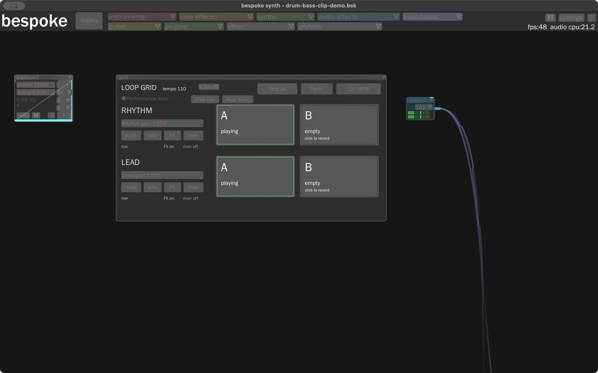
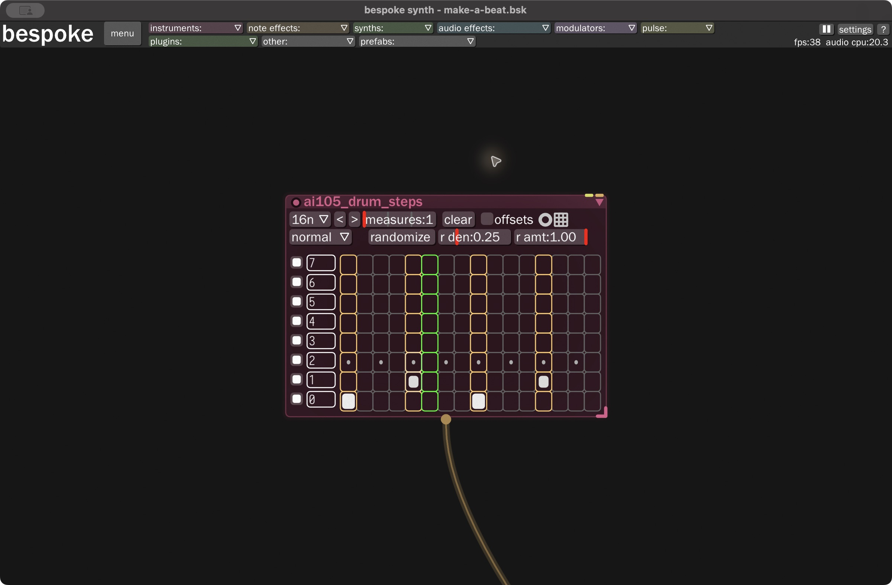

Bespoke guitar looper · hands-on starter
Your first beat and clip performance
Start with two recorded loops: a simple drum beat and a bass phrase. Learn to launch, mix, stop, then record your own variation. About 10 minutes. No microphone or MIDI controller required.
1 · LISTEN AND FIND THE CLIPSTwo rows, two sounds
Open Launch Performance Demo.command. If another Bespoke window is open, close it first. The Rhythm row holds drums. The Lead row holds bass. Both A clips contain four bars at 110 BPM; the B clips are empty.
Click Rhythm A, then Lead A. They turn green and start on a bar boundary. If global audio is paused, use Shift + P.

This is the actual Bespoke panel, not a separate web player.
The preview is exported from the recorded clips. Live sources and monitor paths are silent in the saved demo.
3 · MAKE A SIMPLE BEATKick, snare, then hats
Open Make a Beat.command for an editor view of the same instruments. The drum sequencer has one bar at 16n, meaning sixteen steps. Use its bottom three rows: row 0 is kick, row 1 snare, row 2 hat. Click a cell to add or remove a hit; its height controls velocity.

Count 1 e & a 2 e & a 3 e & a 4 e & a. Kick lands on beats 1 and 3; snare on 2 and 4. Hats mark eighth notes. The starter already has this pattern. Try adding a kick at step 11, or removing every other hat.
The sequence triggers the drum synth. The audio cable then feeds the Rhythm recorder. The clip will store the resulting sound, including any effects before that recorder.
5 · KEYBOARD AND MIDIMake the panel your controller
Enable the panel's Performance keys switch. Hold Control + Option and press one of these keys. Bare keys, normal typing, and Bespoke's existing shortcuts keep their normal behavior. The panel ignores key repeats.
| Key with Control + Option | Action |
|---|
| 1 / 2 | Rhythm A / B |
| 3 / 4 | Lead A / B |
| Q / W | Rhythm / Lead mute |
| A / D | Rhythm / Lead solo |
| E / R | Rhythm / Lead FX |
| Z / X | Rhythm / Lead live monitor |
| U / I | Increase Rhythm / Lead gain by 0.1 |
| S | Stop all on the next bar |
| P | Panic immediately |
Remap a function
- Click Map key or Map MIDI to show the assignment overlay.
- Click the panel function you want to assign.
- For keyboard, press an allowed Control + Option chord. For MIDI, send a note or CC from a controller connected through Bespoke's MIDI controller module. Use CC for gain sliders.
- Exit map mode and test it. Esc cancels a pending mapping. Save the native session to keep the assignments.
Mapping selects a function without performing it. Existing key assignments cannot silently be replaced by duplicates. The keyboard-enable switch resets off on session reopen; turn it on when ready to perform. MIDI remapping replaces the previous assignment on the same controller. Transfers between different controllers need the native controller editor. MIDI input requires a configured controller; connecting hardware and selecting its input is still a separate step.
6 · KEEP YOUR WORKSave a session with the audio
Use Command + Shift + S and save a new .bsk. That file keeps recorded audio and plugin state. On reopen, recorded clips start stopped; launch them when ready. A JSON layout stores the setup rather than the recorded performance.
If you hear nothing
- Resume global audio with Shift + P if the top-right button shows a play triangle.
- Check the track is unmuted and its gain is above zero, especially after Panic.
- Launch the recorded clips; blue means stopped.
- Check the output device in settings. The supplied local demo targets MacBook Pro Speakers.